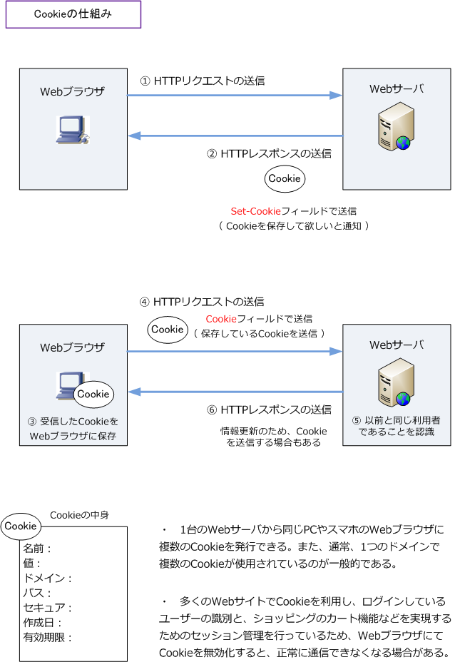
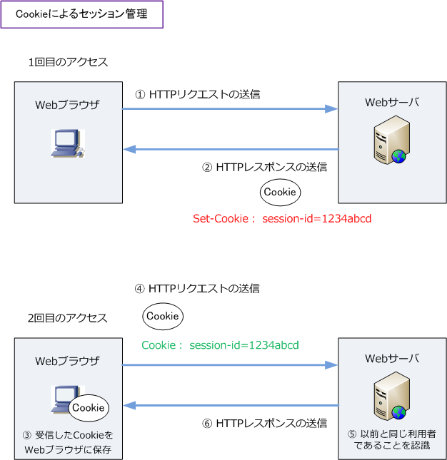

HTTP Cookie
Cookieとは
Cookie（クッキー）とは、クライアントのWebブラウザとWebサーバとの間で、状態を維持・管理する 仕組みのことであり、その通信の際にクライアントのWebブラウザに保存された情報を指します。 Cookieの送受信はHTTPにより行われることからも、Cookieは、正確には「HTTP Cookie」と言います。 NW技術の視点では Cookie はセッション管理とユーザ識別を実現するために利用されるものと言えます。
Cookieにより、特定のWebページを訪問した履歴やログイン情報などを記録してくれることから、その 特定のWebサイトに再度訪れた場合には、同じクライアント（利用者）のWebブラウザだと分かります。 Cookieにより、ログイン状態は一定期間は保持されることから、例えばネットショッピング等で何度も ログイン情報を入力する必要はなく、ネットショッピング中にページから離脱しても買い物カートの中の 商品がそのままの状態でスムーズに利用できます。
クライアントのWebブラウザにCookieが保存される仕組み
クライアントのWebブラウザでネットショッピングのWebサーバにアクセスすると、次の流れでCookieが 送信されてWebブラウザに保存されます。HTTPでは、データを要求するHTTPリクエストとそれに応答し 要求されたデータを送り返すHTTPレスポンスの2つのやりとりを繰り返してWebページを表示しています。
Cookieは、WebサーバがHTTPレスポンスで送信するデータの一部であり、クライアントはそのCookieを 保存して、後続の要求でそのCookie情報をWebサーバに返します。結果、WebブラウザとWebサーバとで セッション管理とユーザ識別を実現することができます。

Cookieを複数のWebサーバで共有管理することで、ECサイトなどの環境で複数のサーバ間にまたがった ユーザー（Webブラウザ）のステート管理も実現できます。また、負荷分散装置（LB）を導入して複数の Webサーバで同じコンテンツを提供している場合でも、Cookieによりステートの維持・管理ができます。
Cookie：セッション管理
Cookieを利用してどのようにセッション管理をしているのか、Cookieの中身を具体的に見ていきます。 クライアントのWebブラウザからHTTPリクエストを送信した後に、WebサーバからHTTPレスポンスで Cookieを送る際に「Set-Cookie」で、（名前 session-id、値 1234abcd）のセッションIDを送ります。
クライアントはWebブラウザにそのセッションIDのCookieを保存します。そして、2回目の通信の際に クライアントのWebブラウザから、WebサーバにHTTPリクエストを送信する際に「Cookie」によって セッションIDの情報が含まれたCookieをWebサーバに提示します。これにより、Webサーバはアクセス してきたこのクライアントを「以前と同じ利用者」であると認識できるのでセッションを維持できます。

Cookieの中身（属性）には、有効期限、ドメイン、パス、セキュアなど色々とあります。以下の設定例は example.comのどのパスに対しても（どの下位ドメインでも）Cookieを返す、という意味となります。
Set-Cookie: session-id=1234abcd; Path=/; Domain=example.com
その他、Set-Cookieで「Secure」の属性を追加されている場合、暗号化されたHTTPS通信の時にのみ Cookieを送ることを意味します。HTTP通信の場合はCookieは送信されません。以下の解説もご参考を。
Cookie：ヘッダフィールド
Webサーバから送信されるHTTPレスポンスに含まれるヘッダフィールド名は「Set-Cookie」であり、 クライアントのブラウザから送信されるHTTPリクエストに含まれるヘッダフィールド名は「Cookie」 となります。ここでは、Set-Cookieで定義できる主な属性を紹介します。
| HTTP | ヘッダフィールド | 属性 | 説明 |
|---|---|---|---|
| レスポンス（応答） | Set-Cookie | Name=VALUE | Cookieの名前と値（ヘッダの先頭にセットされる） |
| レスポンス（応答） | Set-Cookie | Expires=DATE | Cookieの有効期限（日時で指定、非推奨の設定） |
| レスポンス（応答） | Set-Cookie | Max-Age=DATE | Cookieの有効時間を秒数で指定 |
| レスポンス（応答） | Set-Cookie | Domain=DOMAIN | Cookieが有効なドメイン範囲の指定 |
| レスポンス（応答） | Set-Cookie | Path=PATH | Cookieが有効なパスの範囲を指定 |
| レスポンス（応答） | Set-Cookie | Secure | HTTPS通信時にのみCookieを送信 |
| レスポンス（応答） | Set-Cookie | HttpOnly | CookieをJavaScriptからアクセスできないよう制限 |
| リクエスト（要求） | Cookie | 保存されているCookieをWebサーバに送信 |
Cookieの「name」や「VALUE」など含めて属性をどのように設定するのかはアプリの設計者が決定します。